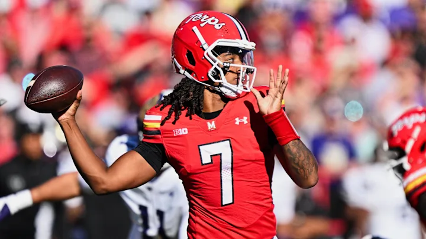

University of Maryland suffers worst athletic season in decades
By: Chase King
May 12, 2026
The University of Maryland suffered its most disappointing athletic seasons in decades, with multiple top revenue sports finishing near the bottom of the Big Ten.

The athletic season started well with Maryland men’s soccer having one of the best seasons in the country.
They finished the regular season 12-0-3. They lost in the first round of the Big Ten tournament and fell in the College Park regional of the NCAA Tournament to finish 13-2-4.
Freshman quarterback Malik Washington led the Maryland Football team to a 4-0 start. They would pick up a lot of steam with fans, but it would go downhill as they lost the last eight games of the season.
The excitement that built around Maryland’s football program was buried quickly, and head coach Mike Locksley was once again placed on the hot seat after finishing 17th in the Big Ten standings.
The men’s basketball team wouldn’t give Maryland fans anything to cheer for either. They had their worst win percentage since the 1988-89 season under new head coach Buzz Williams.
They had quite a few historic lows, including a 43-point loss to Michigan State that was the program's largest loss since 1944. They would suffer their largest loss in the XFINITY Center in the following game against Purdue.

The Terrapins would end the season 17th in the Big Ten standings and tied with the most losses in program history.
Part of the reason for such a poor season was the injury to senior Pharrel Payne, the Terps' star forward. Payne was averaging 17.5 points per game in 10 games before getting injured.
“I think Maryland’s sports have been underwhelming this year,” said sophomore government and politics major Ian Rashid. “I only went to a couple sports games this year, but if our premier teams were better I would have gone to more.”
Injuries would plague the women’s basketball team as three contributors went down with injuries in the first two months of the season.
Freshman guard Lea Bartelme, sophomore guard Ava McKennie and senior guard Kaylene Smikle all suffered season-ending injuries through November and December.
Smikle was averaging 13.1 points through her first seven games, which was the second-highest on the Terrapins roster.
The women’s basketball team would still find the most success of any of the four major sports teams for the Terps.
The four major revenue sports are football, men’s basketball, women’s basketball and baseball.
Maryland women’s basketball finished the season ranked 24-9 and was ranked 20th in the final AP poll.
They would fail to reach the Sweet Sixteen for only the second time since COVID shut down the NCAA Tournament in the 2019-2020 season.
Maryland’s baseball team is in the middle of its second straight disappointing season. They are currently 22-23 and only 6-15 in Big Ten play.
In 2023, Maryland baseball won both the regular season and Big Ten tournament championship in the midst of a 42-21 season. They lost in the NCAA Winston-Salem regional against No. 1 Wake Forest and the unranked George Mason.
Since then, it has been in a steady decline. The Terps finished 2024 with a 34-22 record and 2025 with a 27-29 record. With a couple of weeks left in the 2026 season, it looks like the trend will continue as the Maryland baseball program continues to struggle.
Maryland's men’s lacrosse program has always been dominant, but even they found themselves struggling this year. They finished with just a 6-5 record through the regular season and would fail to make the NCAA Tournament after going 1-1 in the Big Ten Tournament. This comes after a 10-2 regular season record in 2024 and an 8-4 record in 2023.
This will be the first time that Maryland men’s lacrosse fails to make the NCAA Tournament since 2002.
The University of Maryland’s athletic program saw the lowest revenue and spending of all Big Ten schools, according to a 2025 report.
| Season | Total Football, M. Basketball, W. Basketball, Baseball and M. Lacrosse record |
| 2025-26 | 70-70 (50%) |
| 2024-25 | 97-58 (62.6%) |
| 2023-24 | 88-64 (57.9%) |
| 2022-23 | 110-52 (68%) |
| 2021-22 | 111-46 (70.7%) |
| 2020-21 | 90-39 (69.8%) |
| 2019-20 | 70-26 (72.9%) |
| 2018-19 | 98-57 (63.2%) |
| 2017-18 | 87-63 (58%) |
| 2016-17 | 116-45 (72%) |
| 2015-16 | 108-52 (67.5%) |
| 2014-15 | 122-43 (73.9%) |